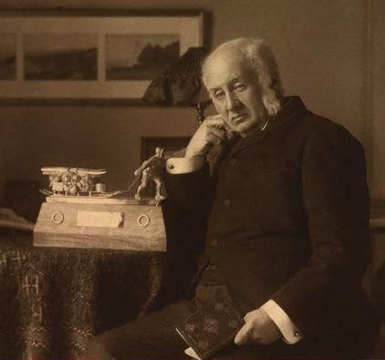

Text Mining
Our project team has delivered the first prototype of the Trading Consequences system. The system takes in documents from a number of different collections. The Text Mining component consists of an initial preprocessing stage which converts each document to a consistent format (in XML). Depending on the corpus that we're processing, a language identification step may be performed to ensure that the current document is in English. (We plan to also look at French documents later in the project.) The OCR-ed text is then automatically improved by correcting and normalising a number of issues. Optical character recognition, where a computer tries to identify the correct words on a scanned page, regularly fails with the long s from the early nineteenth century (i.e. ſ ) and with end of line hyphenation. Fixing these problems reduced the numbers of errors considerably. The main processing of the TM component involves various types of shallow linguistic analysis of the text, lexicon and gazetteer lookup, named entity recognition and geo-grounding, and relation extraction. Put more simply, we look for relationships between one of our four-hundred-odd commodities and places in the text (i.e. Ontario cheese producers shipped three tons of cheddar to London.) We determine which commodities were traded when and in relation to which locations. We also determine whether locations are mentioned as points of origin, transit or destination and whether vocabulary relating to diseases and disasters appears in the text. All additional information which we mine from the text is added back into the XML-formatted document as different types of annotation.Populating the Commodities Database
The entire annotated XML corpus is parsed to create a relational database (RDB). This process extracts and stores not just metadata about the individual document, but also detailed information that results from the text mining, such as named entities, relations, and how these are expressed in the relevant document.Visualisation
Both the visualisation and the query interface access the database so that users can either search the collections directly through textual queries or browse the data in a more exploratory manner through the visualisations. For the prototype, we have created a static web-based visualization that represents a subset of the data taken from the database. This visualization sketch is based on a map that shows the location of commodity mentions by country. We are currently working on dynamic visualization of the mined information which will be accessible via a query interface that we are busy improving. The visualisation and query interface will allow historians to explore the results of the text mining through innovative new tools, while at the same time allowing research to drill down and find links to documents in their original repositories. [caption id="attachment_607" align="alignleft" width="270"]
[caption id="attachment_607" align="alignleft" width="270"]
Clements Markham[/caption] The early prototype provides a great opportunity for the historians to learn more about the process and to provide feedback to help identify problems in the text mining stage. A map for cinchona, the plant whose bark was processed into quinine, an anti-malarial drug, included Markham, a suburb located north of Toronto. The historians recognized that this sentence would have actually referred to Clements Markham, the British official who smuggled cinchona seeds out of Peru. Subsequently, the computational linguists adapted the code that helps distinguish people from places to allow this distinction. In the months ahead we will continue to identify and solve problems, while at the same time adding to the complexity of the text mining to database to visualisation pipeline. Once we have a more advanced prototype working on the web, we would love to have feedback from more commodity historians. Please contact Jim Clifford if you would be interested in testing out this research tool later this year. [caption id="attachment_608" align="alignleft" width="800"] Markham Civic Centre[/caption]